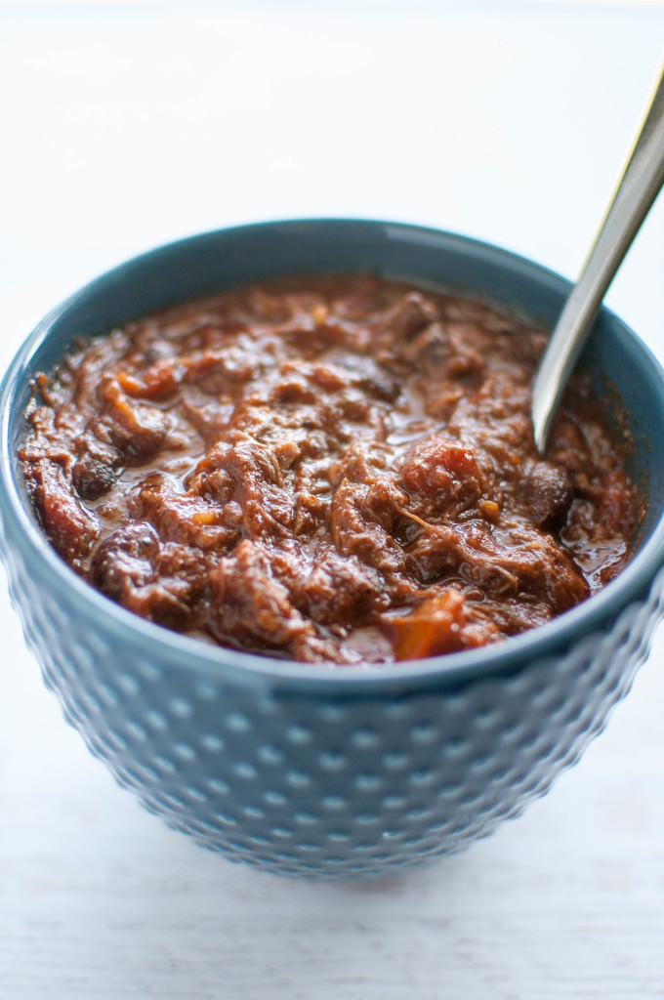

Short Rib Chili
For Chili:
2-3 lbs Boneless Beef Short Ribs (trim excess fat)
1 can (16 oz) Dark Red Kidney Beans
3 tbsp Kosher Salt
1 can Chipotle in Adobo (use depending on desired spice level)
2 tbsp Garam Masala
1 tbsp Oregano
1 quart low-sodium chicken broth
1 oz chopped chocolate
1 tbsp finely-ground coffee
2 tsp soy sauce
1 large yellon onion (diced)
4-5 cloves garlic
1 jalapeno
1 can (28 oz) crushed/diced/pureed tomatoes
1/4 cup apple cider vinegar
1 tbsp brown sugar
1 tbsp favorite hot sauce
Salt and Pepper to taste
For Garnish (optional):
Cheddar Cheese, grated
Onion, diced
Scallions, sliced thin
jalapeno, diced
Directions
1: Heat dutch oven to medium-high, add oil until shimmering.
Sear short ribs, browning on all sides, about 8-10 minutes. Once done remove and let rest.
2: While short rib cooking, combine chipotle in adobo, garam masala, chocolate, coffee,
soy sauce, and half of chicken broth to a blender. Blend until mixture turns into smooth paste.
3: Chop short rib into 1/4 to 1/2 inch pieces, set aside.
4: Heat 4 tbsp vegetable oil in dutch oven over medium heat until shimmering. Add onions, salt,
and let cook for 6-7 minutes, stirring frequently. Once soft, add garlic and jalapeno, stirring frequently for
1 minute. Add chipotle paste and cook, 2 to 4 minutes. Add chopped short rib, rest of chicken broth, and bring
to simmer. Once simmering, reduce heat to lowest possible and cook 1 hour, with lid ajar. Add beans, tomatoes and cider
vinegar and cook, fully covered, for 2 to 3 hours, or until meat is fully tender. Add extra broth or water if
liquid needed.
5: Cut heat, add brown sugar and hot sauce and mix to combine. Season to taste with salt, pepper, and
extra vinegar if desired.
Enjoy!
